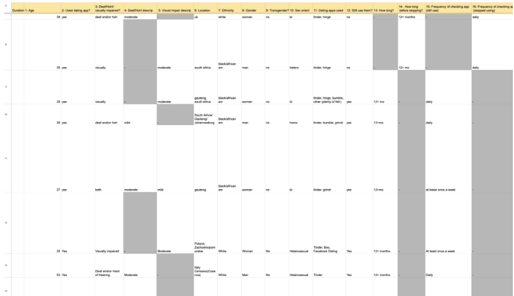
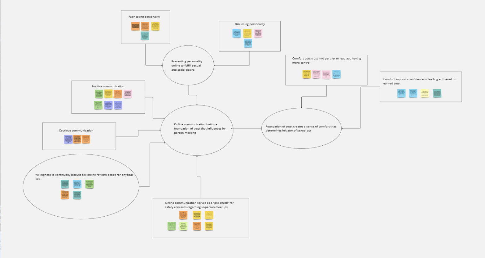
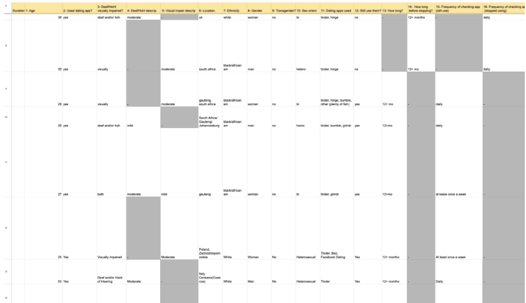
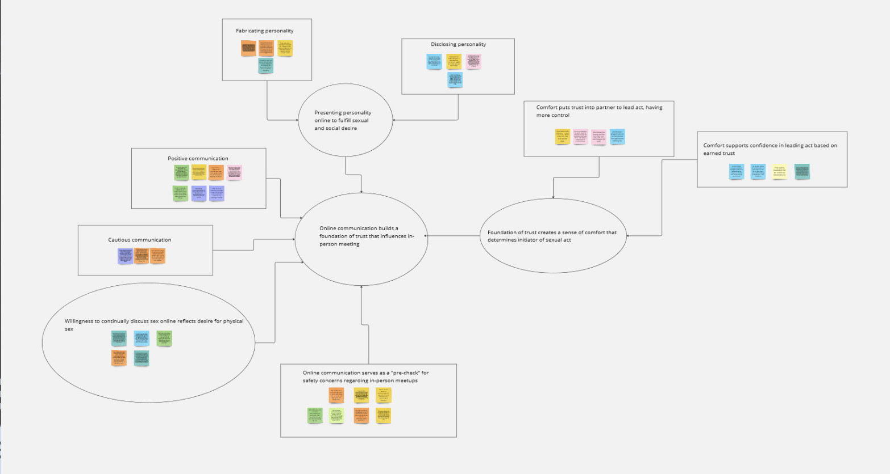

For my Shark Tank Simulation class at Penn State University last semester, we were tasked with addressing a societal challenge. I shared my personal challenges of navigating the complex process of selecting a major. We adopted the
UX Designer
Project Leader
Aug-Dec 2024
Team3 Undergraduate Students
I found this project particularly rewarding as it demonstrated how the principles of design thinking extend beyond my UX classes. Both methodologies shared similar approaches, focusing on creating functional prototypes and validating them before investing significant resources. Here is the structure of our workflow.
I studied key principles and pitched my startup idea to the class, earning the second-highest vote out of 20+ proposals.
I conducted semi-structured interviews across different grade levels to gather diverse perspectives on their academic journeys.
Through data analysis and persona creation, I realized that while I share similar challenges with other students uncertain about their majors, our solutions and needs vary.
I created a set of sketches to lay the foundation for the design & development process.
I conducted 4 usability tests to gather feedback and incorporated the insights to enhance our designs.
Through our user research, I crafted a persona to represent the journey of undecided college students.
I sketched a lo-fi prototype with a journal-like design, aiming to give users an easy way to navigate all their information in one place after taking the quiz. This layout creates a more personal and organized experience, helping users reflect and engage with their career exploration.

By using Figma throughout the design and development process, I was able to create a high-fidelity, interactive prototype that was both aesthetically engaging and highly functional, offering a valuable tool for undecided students exploring their major options.
 



A comprehensive design system that includes typography, reusable UI components, and a cohesive color palette, all crafted to ensure consistency, usability, and a unified visual identity across my projects.